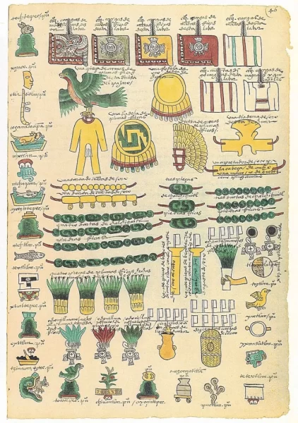

Durante el siglo XV, los mexicas se consolidaron como el grupo hegemónico de Mesoamérica. La formación de la Triple Alianza —integrada por México-Tenochtitlan, Texcoco y Tacuba— permitió extender su poder sobre más de 400 señoríos distribuidos a lo largo de la antigua Mesoamérica, antes de la llegada de los españoles.
De acuerdo con la Matrícula de Tributos y su derivado, el Códice Mendocino (elaborado hacia 1540), los señoríos sometidos fueron organizados en 38 provincias tributarias. Esta división fue arbitraria y no siempre correspondía a vínculos directos entre los señoríos que integraban cada provincia.
El tributo entregado por los pueblos podía abarcar desde alimentos básicos para la subsistencia hasta bienes de lujo y objetos exóticos que requerían de un comercio especializado.
En el caso de la provincia de Tuxtepec, sus productos quedaron registrados en la foja 46 del Códice Mendocino. Estos se entregaban dos veces al año e incluían principalmente objetos suntuarios, como mantas de algodón bordadas, elaboradas por artesanos especializados. También se mencionan productos exóticos obtenidos mediante intercambio, como las piedras verdes o chalchihuites (jadeíta o serpentina) y el ámbar.
Para garantizar la entrega del tributo, los mexicas establecieron en la cabecera de Tuxtepec una colonia o guarnición destinada al resguardo de los bienes recaudados. Estos espacios, además de cumplir con funciones de control, servían como postas para comerciantes y tamemes, lo que facilitaba el tránsito de mercancías a lo largo del imperio.